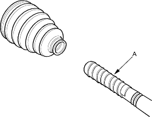

- Wipe off the grease to expose the driveshaft and outboard joint inner race.
- Make a mark (A) on the driveshaft (B) at the same position of the outboard joint end (C).

- Carefully clamp the driveshaft in a vice.

- Remove the outboard joint (A) using the special tools.
- Remove the driveshaft from the vice.
- Remove the stop ring from the driveshaft.

- Wrap the splines on the driveshaft with vinyl tape (A) to prevent damage to the boot.

- Remove the outboard boot. Take care not to damage the boot.
- Remove the vinyl tape.